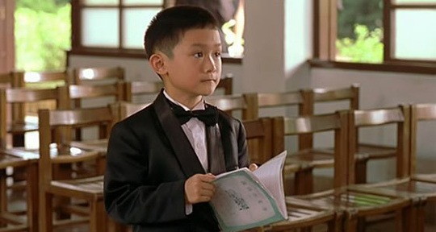

30日的北京下了一整天的雨，7月1日才又是明媚的阳光。窝在家看了一天的电影，还在豆瓣上发现了杨德昌的新片《追风少年》，说是成龙与杨德昌合作的动画片，马上做了标记，放到“我想看”那栏里。谁想到傍晚出门溜达，手机新闻报却传来了一条噩耗：蔡琴前夫，台湾著名导演杨德昌于美国当地时间6月29日因结肠癌病逝，享年59岁。当时我和依树正坐在家对面西蜀老宅店里，等着迟迟未上的晚餐，那么一瞬间，我们都不能相信这样一条消息，明明早上还期待着他即将完成的新片，傍晚的时候人却已经没了。美国时间6月29日，也就是我们的6月30日，大雨滂沱的一天，不知道当时的台北是不是也在下雨。 知道杨德昌是源于《牯岭街少年杀人事件》，60年代的台湾，欢愉而沮丧，激扬而疼痛的青春，在失望、苦闷、绝望、窒息的灰色镜头里无声地纠缠挣扎着。小四、小明、Honey、小马、滑头、还有小四父亲…每个人物都是那样清晰立体，充满故事。4个小时的影片，丝毫不觉得冗长，反而让观者真切地经历了一番那个灰暗的年代。当年的张震才14岁，因这部影片一夜成名。当年的杨德昌凭借这部影片获第28届金马奖最佳作品奖、最佳编剧奖。
《牯岭街少年杀人事件》之后，很长时间没有关注杨德昌的电影，直到去年依树推荐了《一一》。当173分钟的影片在舒缓的音乐中走向终点时，我们都只想像洋洋一样说一句“我也老了”。我们就这样心甘情愿的跟随杨德昌，跟随简一家，走过了一生。这是一部能让你无言以对的电影，看完它，你还想说什么呢，还能说什么的，似乎所有的语言都是多余的，所有的细碎而微妙的情感都融化在电影里了，那就是生活，就是我们每天每天所经历的全部。这部2000年的电影，获得了戛纳电影节最佳导演奖和美国金球奖最佳导演奖。法国媒体更是用“杨德昌‘生命的诗篇’透过电影的传送吟唱”来评论《一一》。 杨德昌与同时期的台湾另一著名导演侯孝贤不同之处在于，前者的作品主要取材于都市，后者主要取材于乡土。杨德昌的影片总是通过缤纷而又压抑的细节冲突体现出一种疏离的都市生存状态，满是冷峻灰暗的影像。 影评人黄志辉评论《一一》时曾经说过，“如果真有所谓‘一生一台戏’，杨德昌的一台戏就是关于台北——他生于斯长于斯的地方。《牯岭街少年杀人事件》是谈六十年代的台北，《海滩的一天》是七十年代，《青梅竹马》和《恐怖分子》是八十年代，《独立时代》、《麻将》和《一一》是九十年代。其实自《青梅竹马》(《牯岭街少年杀人事件》除外)之后，杨德昌的电影都是在谈当下的台北：他彷佛以‘台北’为对象，进行一项为期一生的社会科学研究，他观察、批判和关怀，每隔数年便交出一份研究报告” 可惜，就在他还没来得及交出新一篇研究报告的时候，却先走了，《追风少年》也就成了他未完成的永远的遗作。 匆匆写下这篇文章，借此怀念杨德昌，同时概叹于新闻还要将“蔡琴前夫”这一称谓放在杨德昌的名字之前，或许他还是属于小众，但希望看到这篇纪念文的朋友都能去看看他的电影，因为在那里，你会看到，在你匆忙行走时被你无意忽视了的人生。